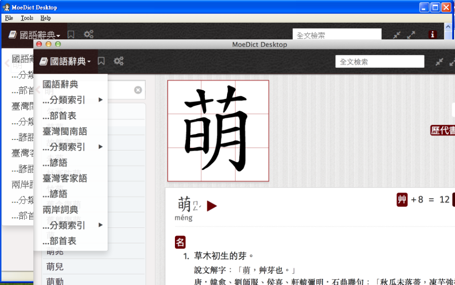
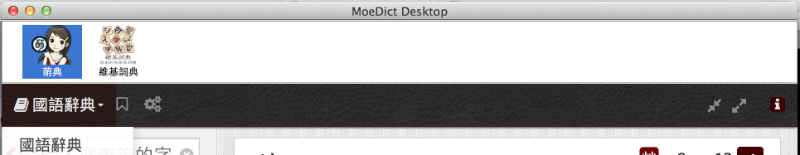

萌典桌面版（Windows / MacOSX / Linux）
桌面版本可離線使用，無需網路環境也可使用
萌典共收錄十六萬筆國語、兩萬筆台語、一萬四千筆客語條目，並支援「自動完成」功能及「%_ *? ^.$」等萬用字元。 定義裡的每個字詞都可以點擊連到說明。 源碼、其他平台版本、API 及原始資料等，均可在 3du.tw 取得。
軟體主畫面
完美結合 https://moedict.tw/ 所有功能，提供您各作業系統離線使用。

擴充套件
隨您需要，安裝擴充套件（如：網路資源或離線語音包）。

線上更新
隨時保持您的字典在最新狀態。
萌典桌面版是基於 [XULApp StarterKit] 開發。
感謝 #g0v.tw 頻道內所有協助開發的朋友們。
License
Moe Dictionary are licensed under the MPL License.